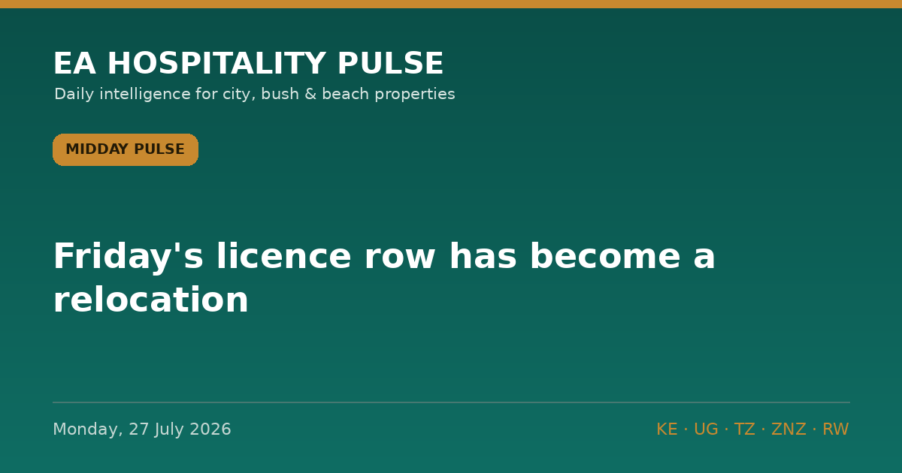

← All editionsFriday's licence row has become a relocation.
Friday's licence row has become a relocation. Laikipia's most reliable off-season bed base is now Tanzania's.
━━━━━━━━━
1️⃣ TANZANIA TAKES BRITAIN'S £58M LAIKIPIA TRAINING BUSINESS
This is what changed. Friday it was one exercise delayed by paperwork; today The Standard (27 July) reports the UK has moved it to Tanzania after Kenya withheld the licences, effectively halting BATUK operations in Laikipia. The exercise is Haraka Storm, due to run in Laikipia September to November. BATUK rotates up to 10,000 British soldiers through Nanyuki a year, and British military activity puts roughly £58m — about Sh10bn — into the local economy annually (per The Standard, 24 July).
🎯 So what: Nanyuki, Timau and Laikipia properties should treat September–November military and contractor room-nights as gone, not deferred, and resell that block this week into migration overflow and domestic conference business. Northern Tanzania operators: British MoD accommodation and logistics demand is now a live tender — get on the supplier list.
🏷 Bush/City | KE 🇰🇪 TZ 🇹🇿 | Reported
2️⃣ THE AUGUST FUEL NUMBER IS BEING SET THIS FORTNIGHT
Brent traded at US$90.28 today, down 8.23% on the day on reports of revived US–Iran talks — but still up 22.15% over the month (per Trading Economics, 27 July). Houthi forces claimed attacks on Aramco facilities at Jizan and Yanbu over the weekend. EPRA held the 14 June–14 August cycle flat: Super Ksh214.03, diesel Ksh222.86, kerosene Ksh191.38 in Nairobi. EPRA averages landing costs of cargoes arriving up to the 10th of the month — so the next number is being priced right now (per Kenyans.co.ke, 24 July, quoting Prime CS Musalia Mudavadi).
🎯 So what: the fact is a 22% monthly move in crude with the window still open. The inference is ours: 15 August diesel is more likely up than down. Cost your Q4 transfer and generator lines at Ksh240 diesel and see what breaks. Any 2027 contract on your desk this week needs a fuel-surcharge clause before you sign it, not after.
🏷 All segments | KE 🇰🇪 regional | Confirmed (price) / inference flagged
3️⃣ TANZANIA PUTS AN EL NIÑO CONTINGENCY PLAN ON THE BOOKS
The Prime Minister's Office is preparing a costed national contingency plan for El Niño, with expanded early warning, disaster risk coordinator Yona Benjamin told The Citizen (27 July). The forecast beneath it is older and should be read as such: TMA projected in May a 90% probability of El Niño conditions developing October to December 2026. TMA director Dr Ladislaus Chang'a urged operators to use the remaining dry months to finish construction.
🎯 So what: that last line is an instruction, not advice. If you have a refurbishment, a new wing or an access road running on the southern circuit, Rufiji, Selous or the coast, pull completion forward into September. Then re-read your green-season cancellation terms — a 90% flood probability across your Oct–Dec window is an underwriting question, not a weather one.
🏷 Bush/Beach | TZ 🇹🇿 ZNZ | Reported
🔗 This edition on the web: https://eahospitalitypulse.com/editions/pulse-2026-07-27-midday.html
— EA Hospitality Pulse | Daily intelligence for city, bush & beach properties
📣 Telegram (full editions) 💬 WhatsApp (daily skim) 💼 LinkedIn (the Big Read) 🗂 Every edition